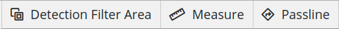
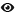

Configuring Detection Filter Areas
Configuring detection filter areas in the Stream Configurator UI allows for quick and easy area creation and management.
For information on the Stream Configurator UI, see the Stream Configurator UI Guide.
Creating a New Filter Area
A detection filter area is a chain of coordinates (joints). At least three joints are needed to define an area.
To create a detection filter area:
Note: Until the element is finished, any step can be undone with a right-click, automatically jumping back to the previous action.
Enter Detection Filter Areas mode by selecting Detection Filter Areas in the toolbar.

Toolbar with available tools
Start a detection filter area with a left-click anywhere on the canvas to place its first joint.
Add a joint with a left-click anywhere on the canvas. Any number of joints can be added to a detection filter area.
Note: While in Detection Filter Area mode, parity of the area can be toggled by pressing
T.Finish the area with a click on the first joint or with a double-click to place the last joint where the cursor is.
Exit the Detection Filter Areas mode by clicking the detection filter area icon.
Note: Exiting the Detection Filter Areas mode automatically completes unfinished areas if at least three joints are defined.
Importing Detection Filter Areas
Stream Configurator provides an import function, to make Detection Filter
configuration easier. From the Detection Filter configuration under
ultinous.service.kafka.detection.filter.config, the vertices snippet can be
copied and imported into Stream Configurator for easier graphical management.
For more information on Detection Filter configuration, see Configuring Detection Filter.
Attention! For this feature to work as intended the Stream Configuration UI needs to access the clipboard. Make sure clipboard access is not blocked by the browser.
To import a detection filter snippet:
Open the Source window.
Ensure that the format is set to
UVAP Det.Filter. Select it from the drop-down menu if necessary.From an external source — such as the Detection Filter configuration — copy a valid detection filter snippet configuration to the clipboard.
Select Import From Det. Filter. Approve clipboard access if the window pops up. Importing invalid configurations results in an error.
Exporting Detection Filter Areas
Stream Configurator provides an export function, to make Detection Filter
configuration easier. The created detection filter snippet can be copied to the
clipboard, then pasted into the Detection Filter configuration file
under ultinous.service.kafka.detection.filter.config. For more information on
Detection Filter configuration, see Configuring Detection Filter.
To export a detection filter snippet:
Open the Source window.
Make sure that the format is set to
UVAP Det.Filter. Select it from the drop-down menu if necessary.Select Copy Source. The detection filter configuration is copied to the clipboard.
Paste the clipboard content into a the Detection Filter configuration file (as a value for
ultinous.service.kafka.detection.filter.config) or to a separate file to store the detection filter configuration.
Managing Existing Detection Filter Areas
Removing a Detection Filter Area
To remove a detection filter area:
Open the Elements window.
Enter Edit mode by clicking the name of the detection filter area.
Select Delete () to delete the detection filter area.
Removing All Elements
To remove all elements:
Attention! This option removes both passlines and detection filter areas!
Open the Elements window.
Select Remove all. A window pops up.
Select OK.
Cloning a Detection Filter Area
Cloning a detection filter area creates a new object with the same joint coordinates. The joints and parity can be modified later.
To clone a detection filter area:
Open the Elements window.
Enter Edit mode by clicking the name of the detection filter area.
Select Clone Object.
Select Save.
Hiding or Revealing a Detection Filter Area
To hide or reveal a detection filter area:
Open the Elements window.
Select Toggle Visibility ( or ) for the detection filter area to be hidden or revealed.
Additionally, Toggle Visibility can be clicked to reverse the visibility of all elements.
Adding a Joint
To add a detection filter area joint:
Open the Elements window.
Enter Edit mode by clicking the name of the detection filter area.
Click on the midpoint to add a joint.
Select Save.
Moving a Joint
To move a detection filter area joint:
Open the Elements window.
Enter Edit mode by clicking the name of the detection filter area.
Left-drag an existing joint to move it.
Select Save.
Removing a Joint
To remove a detection filter area joint:
Open the Elements window.
Enter Edit mode by clicking the name of the detection filter area.
Right-click an existing joint to remove it.
Select Save.